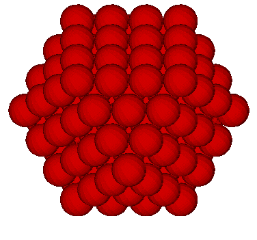
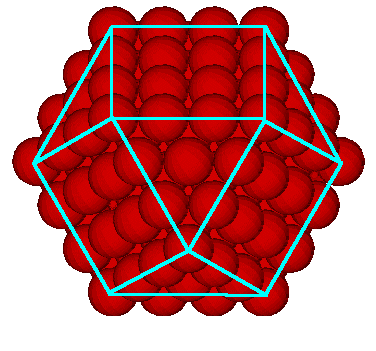
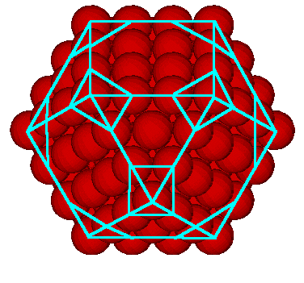
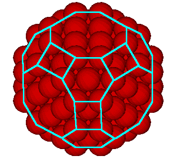
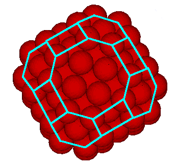
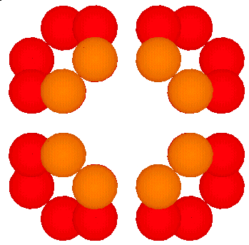

After playing with the 144 polyhedron models that I made, I saw that the underlaying structure to the polyhedron consisted of squares, hexagons, and octagons. This reminded me of a polyhedron I had seen on Steve Waterman's web page which deals with, among other things, the closest packing of spheres.
This led me to consider the 3-frequency VE. ("3-frequency" means that there are 3 "gaps between the spheres" along the polyhedron's edges. Which means 4 spheres along an edge.)
We can make the VE easier to see by drawing in the edges as straight lines.
We see that if we remove a sphere at each of the 12 vertices of this 3-frequency polyhedron...
We are left with a polyhedron consisting of rectangular, hexagonal and octagonal faces.
 This polyhedron has 48 vertices. Lynnclaire says that the "cones of light" emerge from the polyhedron through 48 vertices. (The polyhedron may have more than 48 vertices overall but there are 48 cones of light through 48 vertices.)
There are 12 rectangular faces, 8 hexagonal faces and 6 octagonal faces for a total of 26 faces.
If we now place a 4, 6, or 8 polygon based pyramid "cap" over each of the rectangular, hexagonal, and octagonal faces, we get a 144 polyhedron.
This "capping" process results in
12 x 4 + 8 x 6 + 6 x 8 = 48 + 48 + 48 = 144
triangular faces.
Counting the total number of spheres in a 3-frequency
VE, we have
1 + 12 + 42 + 92 = 147.
Now, recall that we removed 12 spheres, so we are
left with 135 spheres.
As you can see from the illustrations, the rectangle and the octagon each have 2 different edge lengths. The rectangle is not a square. In my other formulation of the 144 polyhedron, the underlaying 4-, 6-, 8-gons all had the same edge length.
Note that what we have done here is to simply truncate a 3-frequency VE (cuboctahedron).
When the 3-frequency Icosahedron is truncated, we get a polyhedron consisting of pentagons and hexagons with 60 vertices. When 60 carbon molecules are placed one at each vertex we get the Buckminsterfullerene molecule.
It would not suprise me if there is a carbon-48 and/or a silicon-48 molecule corresponding to the truncated VE (cuboctahedron).
By removing the inner spheres of the above polyehdron as well as the 4 inner-face spheres of each of the octagonal faces, the 8 hexagons can move radially toward the center of the polyhedron. At the point where the hexagons touch one another, the rectangular faces become square faces and the octagon faces become regular octagons (the 8 edges of the octagon are all the same length.)
Usage Note: My work is copyrighted. You may use my work but you may not include my work, or parts of it, in any for-profit project without my consent.